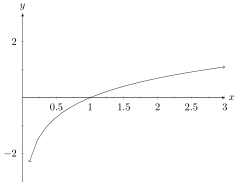

What are the approximate (x,y) coordinates of the local minimum(s), if any exist? (Select all that are local minimums; keep in mind we are asking for an approximation, not precise values)
and There are no local minimums.
This is a (lengthy) practice exam for Exam 1.
NOTE: There may be random lines that look like \texttt{(SOME TEXT)} and maybe even some { } within that text. You can ignore everything that isn’t the text itself; ie the texttt bit and the braces, they are an artifact of how some randomization is being done that I haven’t had time to fix yet. If you literally delete the \texttt and the braces from what you see, and just keep the text itself, it will read exactly as intended. So just ignore all those texttt and braces whenever you see them.
Also note: Some of the below has randomized elements, some do not. Currently Xronos does not support randomized graphing (although we’re working on it!) so a lot of the graphing problems won’t randomize, but a surprising amount of the other problems will change values or text if you hit the green “another” button in the top right corner to get another version of this practice exam. This also means it may take some time for the entire test to render because we have to rely on public servers to do the randomization for us currently, so please be patient. If it takes more than 3-5 minutes to fill out the random values (meaning: if there are still spinning wheels of death going after 3-5 minutes) there is a problem. Try hitting the “another” button to see if it resolves itself. If it keeps doing this, please contact your instructor and let him know!
Given: , , , Compute:
Given: and . Which of the following is equivalent to
If a function is invertible, then and must have the same parent function.
If the point is on the graph of , then which point is on the graph of (the graph of inverse) where ?
Let be a relation. If is a function, must it be true that is a function?
If exists, then passes the horizontal line test.
Suppose, for some function we have that . What can we say about ?
If the point is on the graph of . Which of the following points must be on the graph of ?
Choose the option that fills in the blank: If is a function, then it suffices to know that it __________________________ in order to know it has a (true) inverse.
Any change in the domain of corresponds to a change in what for ?
If the point is on the graph of , then which point is on the graph of (the graph of inverse) where ?
Let be a relation. If is a function, must it be true that is a function?
If a function has a relative maximum and a relative minimum, must it have an absolute extrema?
If a continuous function has no absolute extrema, and it has a relative maximum, must it have a relative minimum?
If the function has zeros, then how many zeros must have?
If you double the height of and then move it up by 4 is it the same as doubling the height and then moving it to the left by 4?
Which of the following represents the translation that moves the graph of to the left by ?
Which of the following represents the translation that moves the graph of up by ?
Which of the following represents a rigid translation?
If a function has a single absolute extrema, must it have a relative maximum or a relative minimum?
Is it possible to have a discontinuous function without any relative extrema?
If the function has zeros, then how many zeros must have? (Hint, consider this in terms of translations or transformations)
Which of the following accurately describes the sequence of transformations applied to to obtain ?
Which equation accurately reflects the following sequence of transformations (in the correct order)? The function is horizontally stretched to its original width, shifted by , vertically stretched to times it’s original height, and shifted by .
Suppose is the result after some other function has been through the following changes; horizontally stretched to its original width, shifted by , vertically stretched to times it’s original height, and shifted by . If the point was on the graph of , what is the corresponding point on the graph of ?
The function is transformed and the points and on the graph of are sent to the points and respectively. Which of following expressions could describe the transformations applied to ?
Which of the following definitions of and could result in the function
You are reviewing a model your company has to calculate the cost to modify one of your software packages for individual usage. You need to update the model due to inflation and changes in the industry, and you have developed a transform that does exactly this. In particular, the updated cost is calculated by , where is the original cost. If a customer had originally been quoted a cost of $ for modifying software packages, what would the updated cost be?
Suppose has a zero at an -value of .
What would a zero of be if ?
Let and be defined by: and .
A university parking lot designates spaces based on parking permit colors. The lot has 6 rows of 12 parking spaces each. The rows are labelled A-F and the spaces are numbered 1-12 in each row. The different color permits are allowed to park as follows:
Is the relationship that determines your potential parking space based on your permit color a function?
What is the parent function of ?
Grades in a particular class are determined using the following numeric scale.
| Grade | Point Range | Grade | Point Range | Grade | Point Range |
| A | 555-600 | B- | 480-499 | D+ | 400-419 |
| A- | 540-554 | C+ | 465-479 | D | 360-399 |
| B+ | 525-539 | C | 435-464 | D- | 340-359 |
| B | 500-524 | C- | 420-434 | E | 0-339 |
Clearly, given any point value, a student can determine their letter grade in the class. This means we have a relationship from point values to letter grades.
What is the domain and codomain of this relationship?
Consider the relationship that takes in your individual assignment grades for this course, and returns the letter grade you earn at the end of the semester. Is this relation a function?
Describe the following set with its ”English-translation”:
When someone calls you and they are in your contacts, your phone uses their phone number to display their name. What are the domain and codomain of this relationship?
Which of the following is best described as a mathematical expression?
Which coordinates describe a point that is units and units to the of the origin?
Which of the following represents the set of all rational numbers that are no larger (more positive) than ? (Note: The set of rational numbers is denoted )
Fill in the blank: Given a graph of a function, you can determine the _________________ of points of interest.
What are the approximate (x,y) coordinates of the local minimum(s), if any exist? (Select all that are local minimums; keep in mind we are asking for an approximation, not precise values)

What are the approximate (x,y) coordinates of the absolute maximum(s), if any exist?
On what interval(s) is the function f(x) decreasing? (Approximate the endpoints if needed.)

Does the graph have any relative extrema? If so, (approximately) where?
Does the graph have any discontinuities? If so, what type?

Does this graph have any absolute extrema?